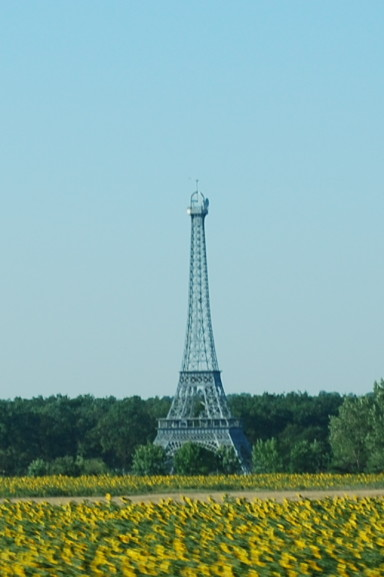
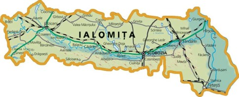

Situat în sud –estul României, ocupând o însemnată parte din subdiviziunea estică a Câmpiei Române, Bărăganul, judeţul Ialomiţa este una dintre cele mai vechi unităţi administrativ teritoriale ale ţării. Suprafaţa totală a judeţului este de 4453 km2 ; adică 1.9% din suprafaţa totală a ţării. La 31 decembrie 2013, organizarea administrativă a teritoriului acestui judeţ era următoarea: 7 municipii şi oraşe ( din care 3 municipii) , 59 comune şi 127 de sate. Reşedinţa judeţului este municipiul Slobozia. Forma de relief dominantă este câmpia , la ea adăugându-se lunca Dunării şi lunca Ialomiţei. Clima judeţului este continentală, caracterizându-se printr-o amplitudine termică anuală şi diurnă relativ mare şi prin cantităţile reduse de precipitaţii: în ultimii 3 ani fenomenul specific zonei fiind seceta prelungită cu efecte negative asupra ciclului vegetativ al plantelor. O altă caracteristică a climei judeţului Ialomiţa o constituie regimul vânturilor , direcţiile lor predominante fiind din nord –est şi nord.
 Fauna existentă în județul Ialomița se poate clasifica astfel :